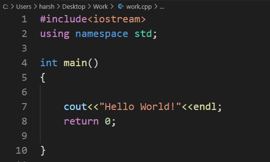

Operators in C++ program
In C++, operators are symbols or special keywords used to perform operations on variables or values. C++ provides a wide range of operators that can be categorized into several groups based on their functionality. Here are some of the most commonly used operators in C++:
1. Arithmetic Operators:
i. + (Addition)
ii. - (Subtraction)
iii. * (Multiplication)
iv. / (Division)
v. % (Modulus)
2. Assignment Operators:
i. = (Assignment)
ii. += (Addition assignment)
iii. -= (Subtraction assignment)
iv. *= (Multiplication assignment)
v. /= (Division assignment)
vi %= (Modulus assignment)
3. Comparison Operators:
i. == (Equal to)
ii. != (Not equal to)
iii. < (Less than)
iv. > (Greater than)
v. <= (Less than or equal to)
vi. >= (Greater than or equal to)
4. Logical Operators:
i. && (Logical AND)
ii. || (Logical OR)
iii. ! (Logical NOT)
5. Bitwise Operators:
i. & (Bitwise AND)
ii. | (Bitwise OR)
iii. ^ (Bitwise XOR)
iv. ~ (Bitwise NOT)
v. << (Left shift)
vi. >> (Right shift)
6. Increment and Decrement Operators:
i. ++ (Increment)
ii. -- (Decrement)
7. Conditional (Ternary) Operator:
i. ? : (Conditional expression)
8. Member Access Operators:
i. . (Dot operator) - Access member variables or functions of an object
ii. -> (Arrow operator) - Access member variables or functions through a pointer to an object
9. Address and Indirection Operators:
i. & (Address-of operator) - Get the address of a variable
ii. * (Dereference operator) - Access the value pointed to by a pointer
10. Sizeof Operator:
sizeof - Returns the size (in bytes) of a data type or object
11. Comma Operator:
i. , (Comma operator) - Evaluates multiple expressions and returns the result of the last one
12. Conditional Operator (Ternary Operator):
i. ? : (Conditional operator) - A shorthand way to write an if-else statement
13. Type Cast Operators:
i. static_cast
ii. dynamic_cast
iii. const_cast
iv. reinterpret_cast
14. Other Operators:
i. sizeof - Returns the size (in bytes) of a data type or object
ii. typeid - Returns information about an expression's type at runtime
These are the basic operators in C++, and they can be combined and used in various ways to perform
different operations on variables and values in your C++ programs.
Example of C++ program
Cin in C++
cin is an important input stream object in C++ that is used for reading input from the standard
input, typically the keyboard. It is part of the C++ Standard Library and is used with the >>
operator to extract data from the input stream.
Here's how you can use cin to read various types of data in C++:
Syntax of Cin

Example of Cin

C++ program to calculate area of a circle